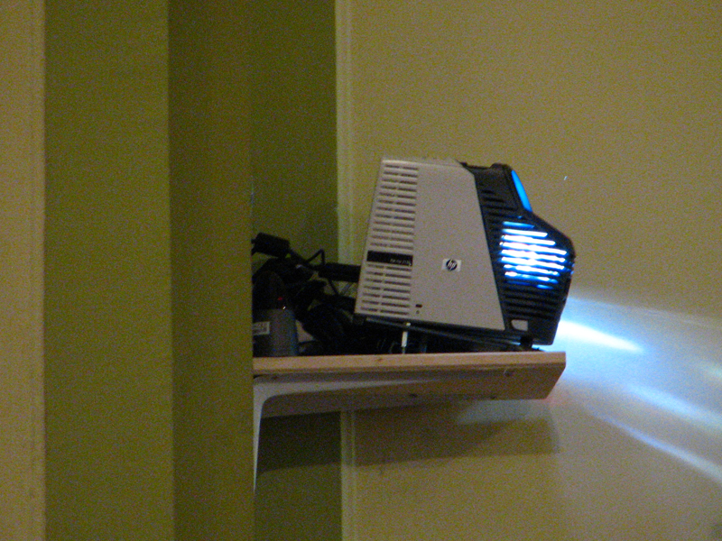

{kind=link}
Hosszas kísérletezés után, 2011. Karácsonyára sikerült beüzemelni a rendszert a rákoshegyi "Lisieux-i Szent Teréz" plébániatemplomban. A fő gondot a projektor és a számítógép nagy távolsága jelentette. Erre végül találtunk megoldást. A videójelet az orgonától - falon kábelezve - vezettük el, VGA-UTP átalakító segítségével, UTP kábelen (hosszabb távra is el lehet vezetni, könnyebben hajlik (sarkokban) a vezeték, vékonyabb és nem olyan fekete).
A képen látható falra vetítünk álló képet (a program beállítási lehetőségeinek köszönhetően!)
 Helyi adottságunk, hogy a projektor - a hívek számára "láthatatlanul" felszerelve - az első oszlopról vetít a 4 m-re levő
szemközti falra, sötét háttérrel és fehér betűkkel.
A falon negatív szövegkép jelenik meg (a program beállítási lehetőségeinek köszönhetően!), így a technikai háttérből
gyakorlatilag semmi sem látszik, a hívek csak az időnként megjelenő szöveget látják.
Helyi adottságunk, hogy a projektor - a hívek számára "láthatatlanul" felszerelve - az első oszlopról vetít a 4 m-re levő
szemközti falra, sötét háttérrel és fehér betűkkel.
A falon negatív szövegkép jelenik meg (a program beállítási lehetőségeinek köszönhetően!), így a technikai háttérből
gyakorlatilag semmi sem látszik, a hívek csak az időnként megjelenő szöveget látják.
Sajnos, a kották (introitus, communio) hasonló módon való vetítése nem lett jó: túl sok a vékony vonal (vonalrendszer, hangjegyszárak, -gerendák, ütemvonal), melyek együttes megjelenése bizonyos távolságból már egybefénylik. Így a kották esetében maradtunk a fehér-fekete formánál, így viszont teljesen jól olvasható.
A kottákat megszerkesztem a fal méretének megfelelő alakra, "png" formátumban, így a program tudja olvasni. Bár az így kapott fájl elég kis méretű (30-40 kB), mégis érezni, hogy a program sokkal lassabban olvassa be, mint a szöveget. De ez itt nem probléma, mert egyelőre csak egy-egy oldalt kell vetíteni.
Ez azóta, a kottás szöveg vetítésének köszönhetően, szintén megoldódott. Már nem különálló képeket vetítünk, hanem a program adottságait használjuk ki.
{kind=link}
{kind=link}
A számítógép egy kisméretű, falra szerelhető gép, a monitor érintőképernyős, a kapcsolást egy "Num-pad"-dal oldottuk meg, de a képernyőn is lehet kapcsolni, ill. virtuális billentyűzettel bármi megoldható.
{kind=link}
Idővel szeretnénk a kottaállványt teljesen mellőzni, kizárólag képernyőt használni, ami részben már most is nagyon jól működik: ordináriumok, orgonadarabok, zsoltárok stb. kottáit lehet képfájlként tárolni és megjeleníteni; sőt a lapozás is könnyebb!
 Az oszlop mögött diszkréten el van rejtve a vetítő, melyet infra-átlövő segítségével kapcsolunk be az orgonától, a projektor távirányítójával. Sajnos kikapcsolni nem tudjuk, de úgy állítottuk be a vetítőt, hogy 5 perc jelszünet után automatikusan kikapcsol (a mise végén).
{kind=link}
A karzatról az említett LAN-nal visszük át a jelet (a templomvilágítás már meglévő kábelcsatornájában vezetve). A tápot az első oldaloszlopra (a projektorhoz) elölről visszük, s a projektor ki-bekapcsolását egy IR-200 (Remote Control Extender) infra átlövővel oldottuk meg (7500 Ft volt Pesterzsébeten, de máshol is 7000 körüli árban láttam).
{kind=link}
Először nem akart működni, de véletlenül rájöttünk, hogy kicsit hosszabban kell nyomni a távirányítót, mint a közvetlen kapcsolásnál. Egyébként mind a VGA-LAN átalakítónak, mind az infra átlövőnek van egy-egy tápja a számítógépnél és a projektornál is.
A VGA-UTP átalakítónál pedig fontos tudni, hogy a szokványostól eltérő érpárcsavarással működik helyesen. Ezt egyik informatikus társunk oldotta meg.
 A távirányítók jól elférnek az orgona játszóasztalán.
A távirányítók jól elférnek az orgona játszóasztalán.
Végül egy kép a rendszer "éles" működéséről.
{kind=link}
Sajó József, Rákoshegy - Budapest.
2011 december 27